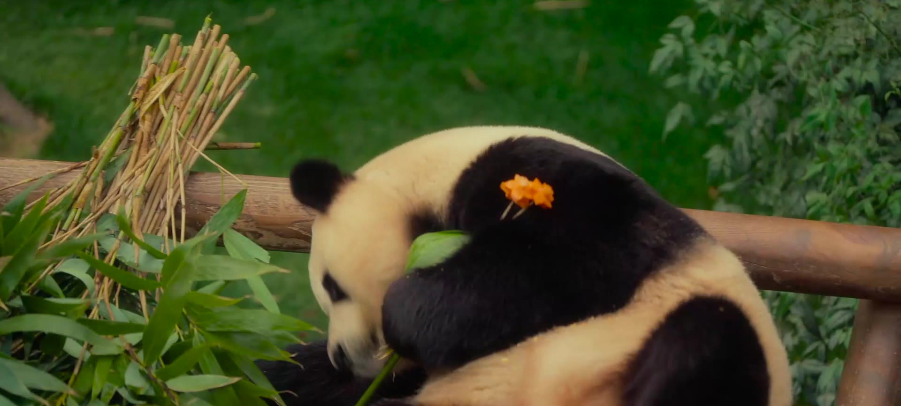

Multi-shot long-form cinematic audio-video
CineDance
A Large-Scale Dataset and Benchmark for Multi-Shot Long-Form Cinematic Audio-Video Generation
1Shanghai Jiao Tong University 2University of Electronic Science and Technology of China 3Zhejiang University 4The University of Tokyo 5Nanyang Technological University


